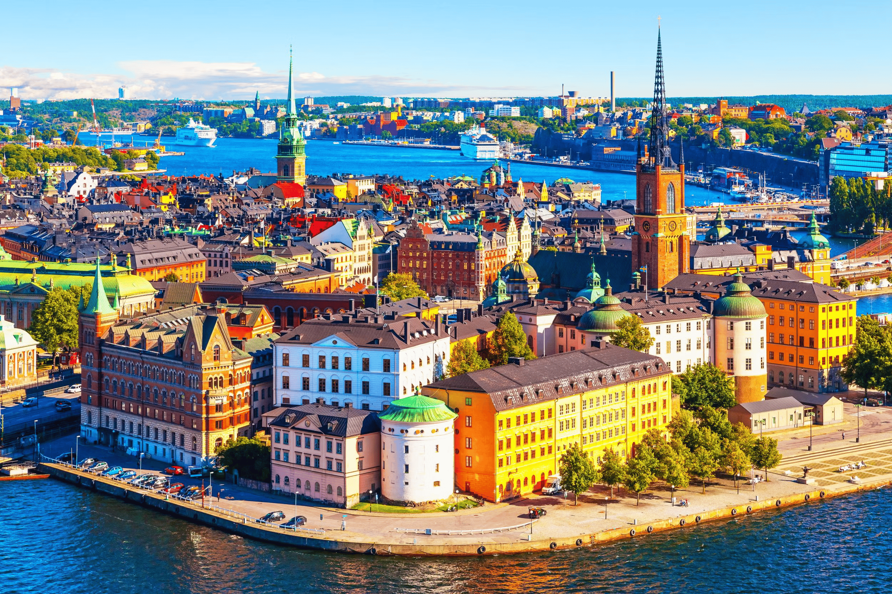
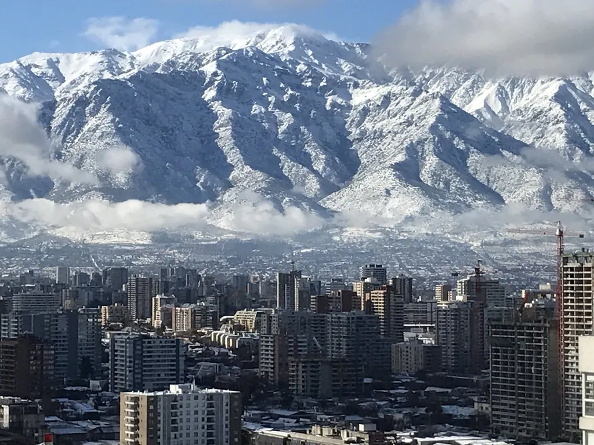
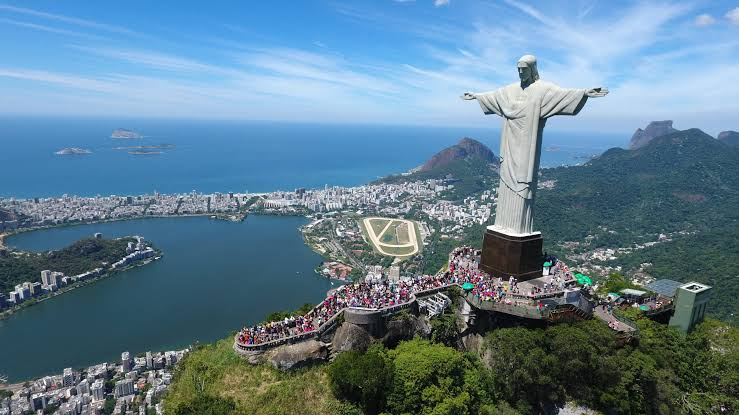
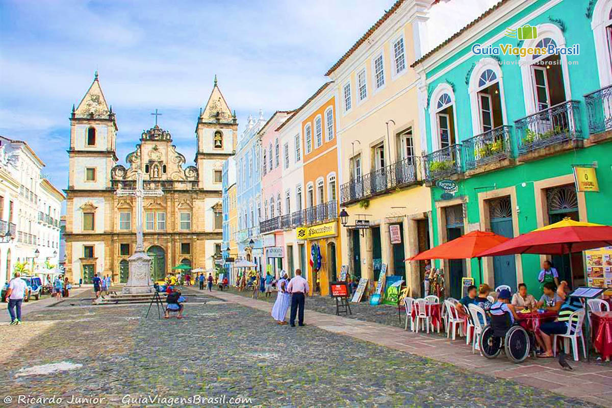
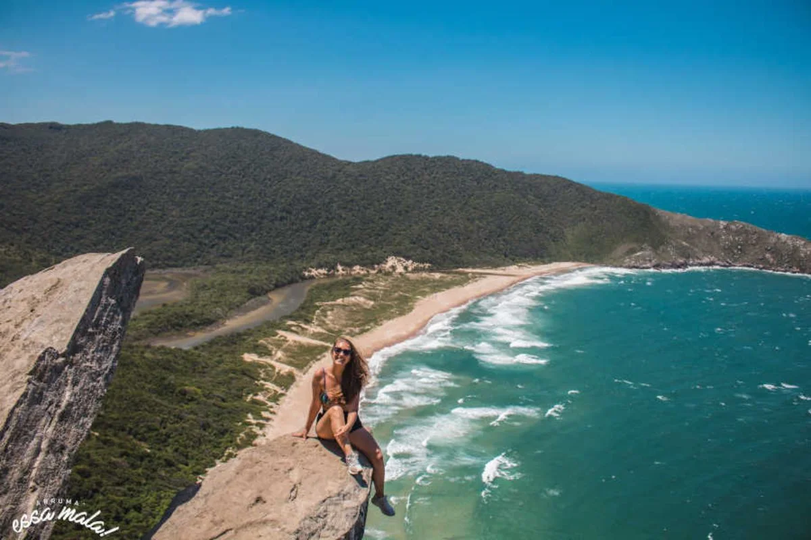

-
1. Suécia
A Suécia é um país fascinante que combina design futurista, uma conexão quase mística com a natureza e recordes que desafiam a nossa imaginação. Longe de ser apenas um lugar frio e organizado, ela guarda segredos e características que a tornam um dos lugares mais impressionantes do mundo.

-
2. Chile
O Chile é o país mais longo do mundo, espremido entre o Oceano Pacífico e a Cordilheira dos Andes, oferecendo desde desertos extremos até geleiras milenares. Um dos passeios mais incríveis (e desafiadores) que você pode fazer no sul do país é subir o Vulcão Villarrica (em Pucón) para espiar a lava borbulhando dentro da cratera.

-
3. Brasil
O Brasil é um país de proporções continentais que vai muito além das praias de cartão-postal. Para quem está planejando uma viagem, o país oferece uma energia contagiante, uma biodiversidade incomparável e uma riqueza cultural única.

Rio de Janeiro
O Rio de Janeiro possui o maior símbolo cristão de toda américa latina, o Cristo Redentor, uma das Sete Maravilhas do Mundo Moderno. Olhar para ele de baixo já impressiona, mas estar lá em cima é uma experiência espiritual e visual inesquecível.

Bahia
A Bahia é o coração cultural do Brasil e um lugar de energia única, onde a história, a espiritualidade e um litoral paradisíaco se misturam de forma mágica. É o destino perfeito para quem busca sol, mas também quer uma viagem rica em significado.

Santa Catarina
Santa Catarina é conhecida por suas belas praias, montanhas e florestas. A capital, Florianópolis, é um destino popular para quem busca relaxar e desfrutar da natureza.